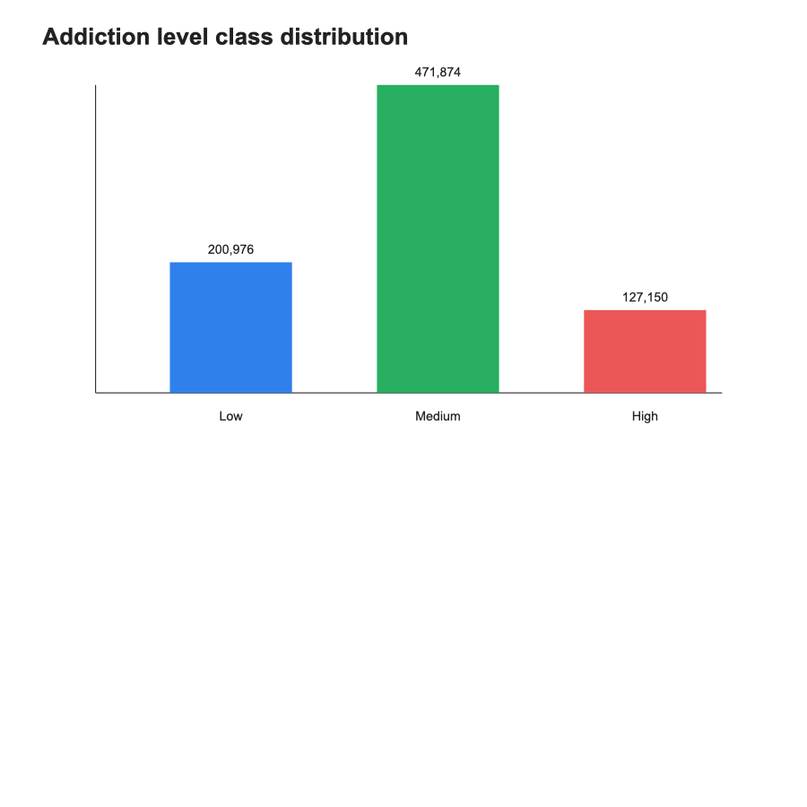
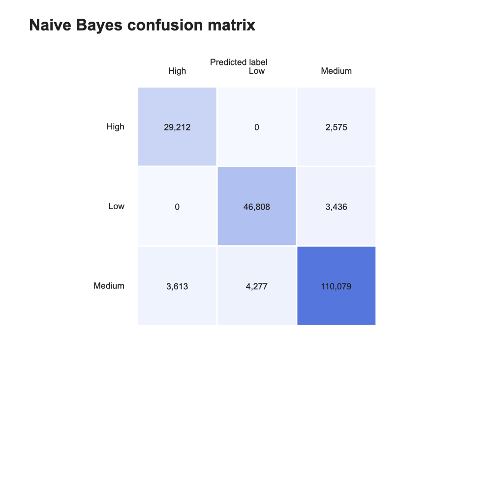
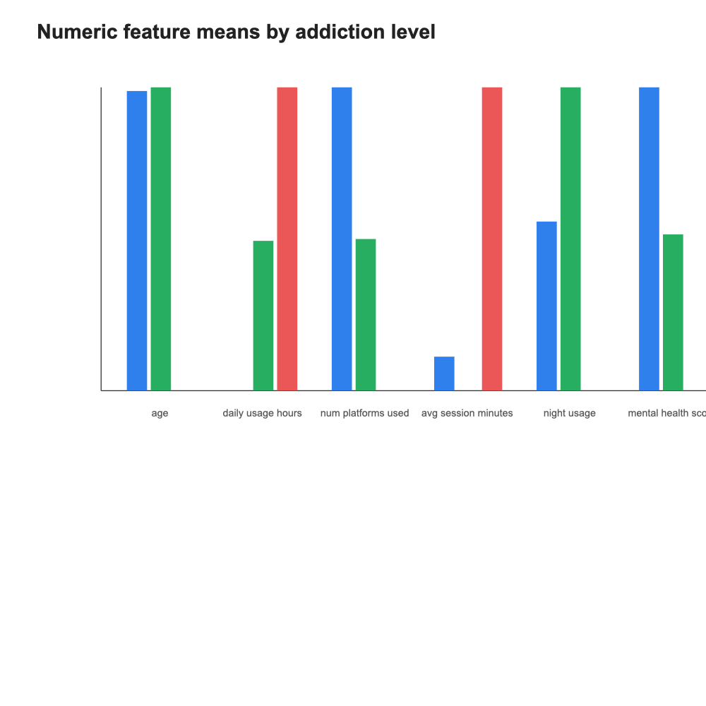

Gen Z хэрэглэгчдийн social media хэрэглээний өгөгдөл дээр хийсэн машин сургалтын төсөл
2026 оны 5-р сарын 14
Social media хэрэглээний хэв маяг хэрэглэгч бүр дээр ялгаатай.
Энэ төслийн үндсэн асуулт:
Social media хэрэглээний өгөгдлөөр хэрэглэгчийн донтолтын түвшинг
Low,Medium,Highгэж автоматаар ангилж болох уу?
Gen Z хэрэглэгчдийн social media хэрэглээний өгөгдлийг ашиглан addiction_level буюу донтолтын түвшинг Naive Bayes алгоритмаар ангилах.
Зорилтууд:
Ашигласан файл:
Үндсэн мэдээлэл:
addiction_leveladdiction_level багана нь гурван ангилалтай.
| Ангилал | Утга |
|---|---|
Low |
Бага түвшин |
Medium |
Дунд түвшин |
High |
Өндөр түвшин |
Тоон хувьсагчид:
agedaily_usage_hoursnum_platforms_usedavg_session_minutesnight_usagemental_health_scorescreen_time_before_sleepКатегори хувьсагчид:
gendercountryprimary_platformpurposeХийсэн алхмууд:
| Үзүүлэлт | Утга |
|---|---|
| Анхны мөрийн тоо | 1,000,000 |
| Цэвэрлэгээний дараах мөр | 1,000,000 |
| Давхардал арилгасны дараах мөр | 1,000,000 |
| Устгасан давхардал | 0 |
Өгөгдөлд missing value илрээгүй.

Medium ангилал хамгийн олон тул үнэлгээнд зөвхөн accuracy ашиглах нь хангалтгүй.
Naive Bayes нь Байесын теоремд тулгуурласан статистик ангиллын арга.
\[ P(C\mid X)=\frac{P(X\mid C)P(C)}{P(X)} \]
Энд:
Naive Bayes дараах хялбаршуулсан таамаглал ашигладаг.
\[ P(X_1,X_2,\dots,X_n\mid C) = \prod_{i=1}^{n} P(X_i\mid C) \]
Өөрөөр хэлбэл feature-үүдийг тухайн ангилал өгөгдсөн үед хоорондоо хараат бус гэж үзнэ.
Тоон хувьсагчдад Gaussian Naive Bayes ашигласан.
\[ P(x_i\mid C) = \frac{1}{\sqrt{2\pi\sigma_C^2}} \exp \left( - \frac{(x_i-\mu_C)^2}{2\sigma_C^2} \right) \]
Загвар class бүр дээр:
тооцно.
Категори хувьсагчдад Laplace smoothing ашигласан.
\[ P(x_i=v\mid C) = \frac{count(v,C)+\alpha}{N_C+\alpha(K+1)} \]
Давуу тал:
Олон жижиг магадлалыг шууд үржүүлэхэд тоон underflow үүсэж болно.
Тиймээс log probability ашигласан.
\[ \log P(C\mid X) \propto \log P(C) + \sum_i \log P(X_i\mid C) \]
Шийдвэр:
\[ \hat{C} = \arg\max_C \log P(C\mid X) \]
| Файл | Үүрэг |
|---|---|
dataset.py |
Өгөгдөл унших, цэвэрлэх, split хийх |
naive_bayes.py |
Naive Bayes алгоритм |
metrics.py |
Accuracy, F1, confusion matrix |
visualization.py |
График үүсгэх |
main.py |
Бүх pipeline-г ажиллуулах |
Хүлээгдэх үндсэн гаралт:
| Үзүүлэлт | Утга |
|---|---|
| Accuracy | 93.05% |
| Macro F1-score | 92.29% |
| Train rows | 800,000 |
| Dev rows | 200,000 |
Macro F1-score ашигласнаар ангилал тус бүрийн чанарыг илүү тэнцвэртэй харсан.
| Ангилал | Precision | Recall | F1-score |
|---|---|---|---|
| High | 88.99% | 91.90% | 90.42% |
| Low | 91.63% | 93.16% | 92.39% |
| Medium | 94.82% | 93.31% | 94.06% |

Гол ажиглалтууд:
Medium ангилал хамгийн олон зөв таамаглагдсанLow болон High шууд их андуурагдаагүйMedium ангилалтай зааг дээр гарсан
Загвар сайн ажилласан шалтгаан:
Naive Bayes загварын давуу тал:
Энэхүү загвар дараах хязгаарлалттай:
addiction_level нь өгөгдлийн label болохоос эмнэлзүйн онош бишЭнэ загварыг:
зорилгоор ашиглах ёсгүй.
Энэ нь сургалт, судалгааны зориулалттай машин сургалтын загвар юм.
Судалгааны хүрээнд:
Naive Bayes алгоритм нь social media хэрэглээний өгөгдөл дээр донтолтын түвшинг ангилахад тохиромжтой, хурдан, тайлбарлагдах боломжтой статистик арга болохыг туршилтын үр дүн харууллаа.
| Гишүүн | Үүрэг |
|---|---|
| Нэр 1 | Сэдэв, өгөгдлийн тайлбар |
| Нэр 2 | Өгөгдөл бэлтгэл |
| Нэр 3 | Naive Bayes алгоритм |
| Нэр 4 | Үнэлгээ, visualization |
| Нэр 5 | Тайлан, presentation |
Асуулт байна уу?